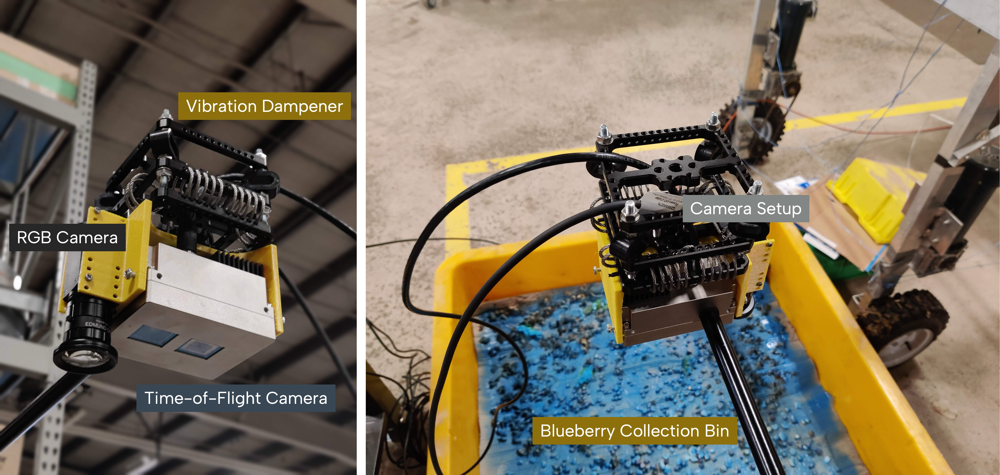

Dalhousie University, Canada
Let's get some wild blueberries.
Overview
Automated commercial wild blueberry harvesters to improve harvestable berry yield and minimize operator stress.
Role
Mitacs Globalink Research Intern
Team
Prof. Travis Esau, Principal Investigator
Connor Mullins, Grad Student
Timeline
May 2022 to August 2022

Background
Wild Blueberries!
Wild blueberries grow low to the ground in rocky areas, showcasing a bold, untamed flavor that sets them apart from cultivated varieties. They're packed with antioxidants and nutrients, making them a powerhouse of goodness. Their versatility makes them a great addition to many dishes, adding a burst of freshness and a unique taste to everything from baked goods to salads.
They typically reach less than a foot in height. Their harvesting process is meticulous, often done by hand or with specialized machinery that carefully collects the berries without harming the delicate plants. The fields of wild blueberries create a beautiful scene, with the small bushes covering the landscape in a lush green hue, adorned by the deep blue of the ripe berries.
Harvesting Them
Current Harvesting Methods
In the world of wild blueberry harvesting, large, sophisticated machines are employed to maximize efficiency and yield. These harvesters require meticulous adjustments to the harvester head height, speed, angle, and various other controls to ensure optimal performance. The harvested blueberries are then fed into large yellow bins, as demonstrated in the video below.
The driver plays a crucial role, overseeing the operation, determining when bins are full, and replacing them as needed. However, the multitude of controls can be overwhelming for the operator. To address this challenge, our goal was to introduce automation to some of these tasks. We aimed to automate the measurement of berry volume in the bins and the automatic switching of bins once they are full. This advancement not only alleviates the burden on the driver but also enhances the efficiency and precision of the harvesting process.
Solution
Sensing Methodology Overview
To accurately measure the volume of berries in the bins, we implemented a camera-based system. A Time-of-Flight and RGB camera was strategically mounted on the harvester, facing downwards towards the bin. This setup utilizes image segmentation and point cloud processing algorithms to estimate the volume of the berries effectively. The system is designed to be robust, ensuring reliable performance in a variety of lighting conditions, including harsh sunlight. It also adapts to different bin depths and colors, making it a versatile solution for diverse harvesting environments. This technology significantly enhances the efficiency of the harvesting process by providing precise volume measurements and reducing the manual workload for the operator.
Memories
The Experience
My Mitacs internship was one of the most rewarding experiences of my life. I thoroughly enjoyed applying my skills to a practical and impactful project in the field - literally! I'm deeply grateful to the entire team who supported me throughout my stay, and to Mitacs for providing such a wonderful opportunity.